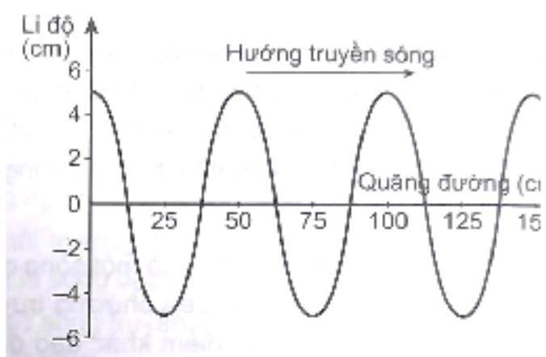
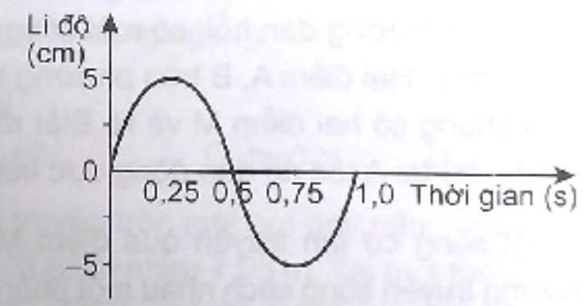

Mỗi câu có 4 phương án, chỉ chọn một đáp án đúng (0,25 điểm).
1
Thông hiểu
Sóng cơ có tần số $f=80\text{ Hz}$ lan truyền trong một môi trường với tốc độ $v=4\,m/s$. Dao động của các phần tử vật chất tại hai điểm trên một phương truyền sóng cách nguồn sóng những đoạn lần lượt $31\text{ cm}$ và $33,5\text{ cm}$, lệch pha nhau góc
2
Thông hiểu
Xét một sóng cơ dao động điều hoà truyền đi trong môi trường với tần số $f=50$ $\text{Hz}$. Xác định độ lệch pha của một điểm tại hai thời điểm cách nhau $0,1\left( \,s\right)$ ?
3
Thông hiểu
Một sóng cơ học phát ra từ một nguồn $O$ lan truyền trên mặt nước với vận tốc $v=$ $2\,m/s$. Người ta thấy 2 điểm $M,N$ gần nhau nhất trên mặt nước nằm trên cùng đường thẳng qua $O$ và cách nhau $40\text{ cm}$ luôn dao động ngược pha nhau. Tần số sóng đó là :
4
Thông hiểu
Một sóng cơ truyền trong môi trường với tốc độ $120\,m/s$. Ở cùng một thời điểm, hai điểm gần nhau nhất trên một phương truyền sóng dao động ngược pha cách nhau $1,2\,m$. Tần số của sóng là
5
Thông hiểu
Một sóng cơ có chu kì $2\,s$ truyền với tốc độ $1\,m/s$. Khoảng cách giữa hai điểm gần nhau nhất trên một phương truyền mà tại đó các phần tử môi trường dao động cùng pha nhau là:
6
Thông hiểu
Đầu $A$ của một dây đàn hồi nằm ngang dao động theo phương thẳng đứng với chu kỳ $10\,s$. Biết vận tốc truyền sóng trên dây $v=0,2\,m/s$, khoảng cách giữa hai điểm gần nhau nhất dao động vuông pha là
7
Thông hiểu
Sóng truyền từ $A$ đến $M$ với bước sóng $\lambda=60\text{ cm}$. $M$ cách $A$ một khoảng $d=$ $30\text{ cm}$. So với sóng tại $A$ thì sóng tại $M$
8
Thông hiểu
Sóng truyền từ $A$ đến $M$ cách $A$ một đoạn $d=4,5\text{ cm}$, với bước sóng $\lambda=6\text{ cm}$. Dao động sóng tại $M$ có tính chất nào sau đây ?
9
Thông hiểu
Tìm vận tốc truyền sóng cơ biểu thị bởi phương trình: $u=2\text{cos}\left( 100\pi t-5\pi d\right)\left( \text{cm}\right)$, ($d$ tính bằng $m$)
10
Thông hiểu
Một sóng ngang truyền trên sợi dây rất dài với phương trình sóng $u=u_{0}\text{cos}\left(20\pi t-\pi x/10\right)$. Trong đó $x$ tính bằng $\text{cm}$, $t$ tính bằng giây. Tốc độ truyền sóng bằng bao nhiêu?
11
Thông hiểu
Một sóng truyền theo trục $\text{Ox}$ với phương trình $u=a\text{cos}\left( 4\pi t-0,02\pi x\right)$ ($u$ và $x$ tính bằng $\text{cm}$, $t$ tính bằng giây). Tốc độ truyền của sóng này là
12
Thông hiểu
Một sóng cơ truyền trong một môi trường dọc theo trục $\text{Ox}$ với phương trình $u=5\text{cos}\left( 6\pi t-\pi x\right)\left( \text{cm}\right)$ ($x$ tính bằng mét, $t$ tính bằng giây). Tốc độ truyền sóng bằng
13
Thông hiểu
Phương trình dao động của một nguồn phát sóng có dạng $u=a\text{cos}\left( 20\pi t\right)\text{cm}$. Trong khoảng thời gian $0,225\,s$, sóng truyền được quãng đường
14
Thông hiểu
Một nguồn phát sóng dao động theo phương trình $u=a\text{cos}\left( 20\pi t\right)\text{cm}$, với $t$ tính bằng giây. Trong khoảng thời gian $2\left( \,s\right)$, sóng này truyền đi được quãng đường bằng bao nhiêu lần bước sóng?
15
Thông hiểu
Một sóng ngang có phương trình dao động $u=6\text{cos}\left[ 2\pi\left( t/0,5-d/50\right)\right]\text{cm}$, với $d$ có đơn vị mét, $t$ có đơn vị giây. Tốc độ truyền sóng có giá trị là
16
Thông hiểu
Một sóng cơ học truyền theo phương $\text{Ox}$ có phương trình sóng $u=10\text{cos}\left( 800t-20d\right)\text{cm}$, trong đó tọa độ $d$ tính bằng mét $\left( m\right)$, thời gian $t$ tính bằng giây. Tốc độ truyền sóng trong môi trường là
17
Thông hiểu
Vào một thời điểm, Hình 8.1 là đồ thị li độ - quãng đường truyền sóng của một sóng hình sin. Biên độ và bước sóng của sóng này là

Hình 8.1
18
Thông hiểu
(SBT - KNTT) Hình 8.2 là đồ thị li độ - thời gian của một sóng hình sin. Biết tốc độ truyền sóng là $50\text{ cm}/s$. Biên độ và bước sóng của sóng này là

Hình 8.2
19
Thông hiểu
(SBT - KNTT) Tại một điểm O trên mặt nước có một nguồn dao động điều hòa theo phương thẳng đứng với tần số $2\text{ Hz}$. Từ điểm $O$ có những gợn sóng tròn lan rộng xung quanh. Khoảng cách giữa hai gợn sóng kế tiếp là $20\text{ cm}$. Tốc độ truyền sóng trên mặt nước là:
20
Thông hiểu
(SBT - KNTT) Một sóng hình sin lan truyền trên trục Ox. Trên phương truyền sóng, khoảng cách ngắn nhất giữa 2 điểm mà các phần tử của môi trường tại điểm đó dao động ngược pha nhau là $0,4\,m$. Bước sóng của sóng này là